Bài 15: Tham chiếu ô tương đối và tuyệt đối
Bài 15: Tham chiếu ô tương đối và tuyệt đối
/en/excel/creating-more-complex-formulas/content/
Giới thiệu
Có hai loại tham chiếu ô:tương đốivàtuyệt đối. Tham chiếu tương đối và tuyệt đối hoạt động khác nhau khi được sao chép và điền vào các ô khác. Tham chiếu tương đốithay đổikhi công thức được sao chép sang ô khác. Mặt khác, các tham chiếu tuyệt đối vẫnkhông đổibất kể chúng được sao chép ở đâu.
Xem video bên dưới để tìm hiểu thêm về tham chiếu ô.
Tài liệu tham khảo tương đối
Theo mặc định, tất cả tham chiếu ô đều làtham chiếu tương đối. Khi sao chép qua nhiều ô, chúng sẽ thay đổi dựa trên vị trí tương đối của hàng và cột. Ví dụ: nếu bạn sao chép công thức=A1+B1từ hàng 1 sang hàng 2, công thức sẽ trở thành=A2+B2. Tham chiếu tương đối đặc biệt thuận tiện bất cứ khi nào bạn cần lặp lại cùng một phép tính trên nhiều hàng hoặc cột.
Để tạo và sao chép một công thức sử dụng tham chiếu tương đối:
Trong ví dụ sau, chúng tôi muốn tạo một công thức nhângiácủa mỗi mặt hàng vớisố lượng. Thay vì tạo công thức mới cho mỗi hàng, chúng ta có thể tạo một công thức duy nhất trong ôD4rồi sao chép công thức đó sang các hàng khác. Chúng tôi sẽ sử dụng tham chiếu tương đối để công thức tính tổng chính xác cho từng mục.
- Chọnôsẽ chứa công thức. Trong ví dụ của chúng tôi, chúng tôi sẽ chọn ôD4.
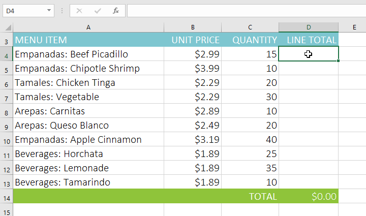
2. Nhậpcông thứcđể tính giá trị mong muốn. Trong ví dụ của chúng tôi, chúng tôi sẽ nhập=B4*C4. 3. NhấnEntertrên bàn phím của bạn. Công thức sẽ được tính toán và kết quả sẽ được hiển thị trong ô.
4. Xác định vị tríbộ điều khiển điềnở góc dưới bên phải của ô mong muốn. Trong ví dụ của chúng tôi, chúng tôi sẽ xác định vị trí ô điều khiển điền cho ôD4.
3. NhấnEntertrên bàn phím của bạn. Công thức sẽ được tính toán và kết quả sẽ được hiển thị trong ô.
4. Xác định vị tríbộ điều khiển điềnở góc dưới bên phải của ô mong muốn. Trong ví dụ của chúng tôi, chúng tôi sẽ xác định vị trí ô điều khiển điền cho ôD4.
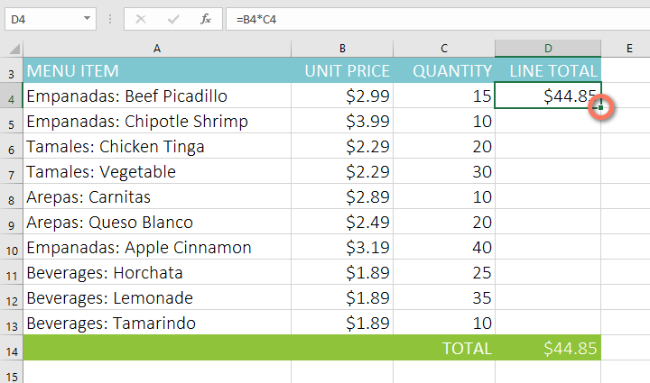
5. Nhấp và kéobộ điều khiển điềnqua các ô bạn muốn điền. Trong ví dụ của chúng tôi, chúng tôi sẽ chọn các ôD5:D13.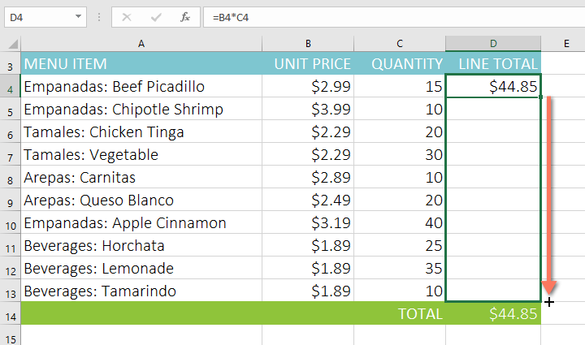
6. Thả chuột. Công thức sẽ đượcsao chépvào các ô đã chọn vớitham chiếu tương đối, hiển thị kết quả trong mỗi ô.
Bạn có thể nhấp đúp vàoô đã điềnđể kiểm tra độ chính xác của công thức. Các tham chiếu ô tương đối phải khác nhau đối với mỗi ô, tùy thuộc vào hàng của chúng.
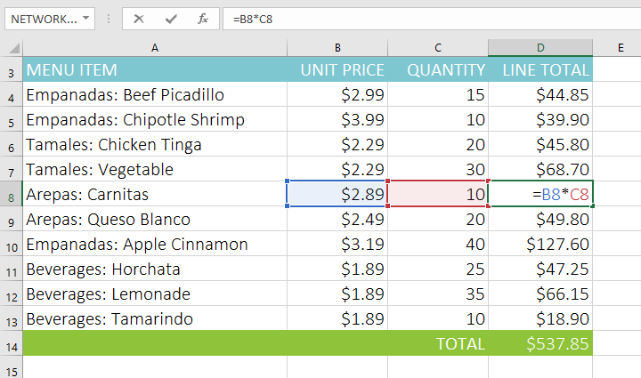
Tài liệu tham khảo tuyệt đối
Có thể đôi khi bạn không muốn tham chiếu ô thay đổi khi sao chép sang các ô khác. Không giống như tham chiếu tương đối,tham chiếu tuyệt đốikhông thay đổi khi được sao chép hoặc điền. Bạn có thể sử dụng tham chiếu tuyệt đối để giữ một hàng và/hoặc cộtkhông đổi.
Tham chiếu tuyệt đối được chỉ định trong công thức bằng cách thêmký hiệu đô la ($). Nó có thể đứng trước tham chiếu cột, tham chiếu hàng hoặc cả hai.
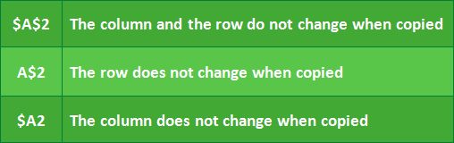
Thông thường, bạn sẽ sử dụng định dạng$A$2khi tạo công thức chứa tham chiếu tuyệt đối. Hai định dạng còn lại được sử dụng ít thường xuyên hơn.
Khi viết công thức, bạn có thể nhấn phímF4trên bàn phím để chuyển đổi giữa tham chiếu ô tương đối và tuyệt đối, như minh họa trong video bên dưới. Đây là một cách dễ dàng để nhanh chóng chèn một tham chiếu tuyệt đối.
Để tạo và sao chép một công thức sử dụng tham chiếu tuyệt đối:
Trong ví dụ bên dưới, chúng tôi sẽ sử dụng ôE2(chứa thuế suất 7,5%) để tính thuế bán hàng cho từng mặt hàng trongcột D. Để đảm bảo tham chiếu đến thuế suất không đổi—ngay cả khi công thức được sao chép và điền vào các ô khác—chúng ta cần đặt ô$E$2làm tham chiếu tuyệt đối.
- Chọnôsẽ chứa công thức. Trong ví dụ của chúng tôi, chúng tôi sẽ chọn ôD4.
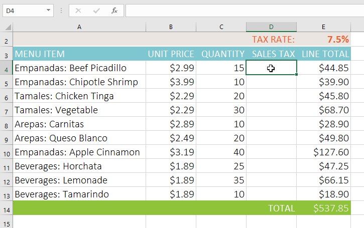
2. Nhậpcông thứcđể tính giá trị mong muốn. Trong ví dụ của chúng tôi, chúng tôi sẽ nhập =(B4*C4)*$E$2, tạo$E$2thành tham chiếu tuyệt đối. 3. NhấnEntertrên bàn phím của bạn. Công thức sẽ tính toán và kết quả sẽ hiển thị trong ô.
4. Xác định vị tríbộ điều khiển điềnở góc dưới bên phải của ô mong muốn. Trong ví dụ của chúng tôi, chúng tôi sẽ xác định vị trí ô điều khiển điền cho ôD4.
3. NhấnEntertrên bàn phím của bạn. Công thức sẽ tính toán và kết quả sẽ hiển thị trong ô.
4. Xác định vị tríbộ điều khiển điềnở góc dưới bên phải của ô mong muốn. Trong ví dụ của chúng tôi, chúng tôi sẽ xác định vị trí ô điều khiển điền cho ôD4.
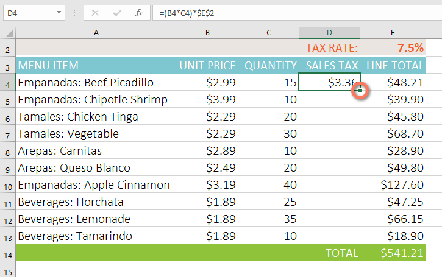
5. Nhấp và kéobộ điều khiển điềnqua các ô bạn muốn điền (các ôD5:D13trong ví dụ của chúng tôi).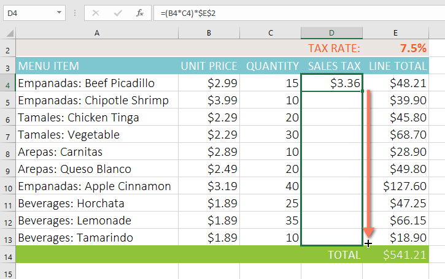
6. Thả chuột. Công thức sẽ đượcsao chépvào các ô đã chọn vớituyệt đốitham chiếuvà các giá trị sẽ được tính trong mỗi ô.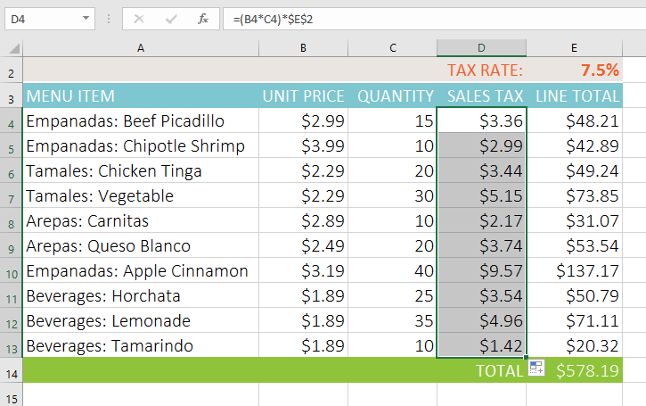
Bạn có thể nhấp đúp vàoô đã điềnđể kiểm tra độ chính xác của công thức. Tham chiếu tuyệt đối phải giống nhau cho mỗi ô, trong khi các tham chiếu khác liên quan đến hàng của ô.
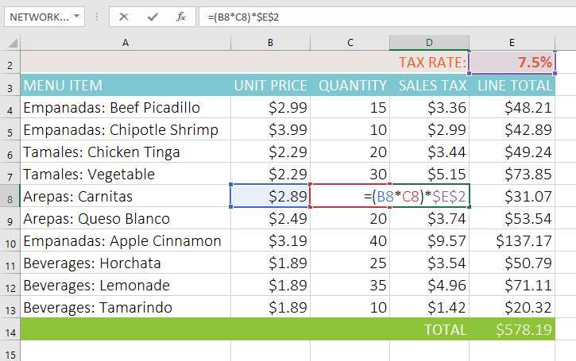
Đảm bảo bao gồmký hiệu đô la ($)bất cứ khi nào bạn tạo tham chiếu tuyệt đối trên nhiều ô. Ký hiệu đô la đã bị bỏ qua trong ví dụ dưới đây. Điều này khiến Excel hiểu nó làtham chiếu tương đối, tạo ra kết quả không chính xác khi sao chép sang các ô khác.
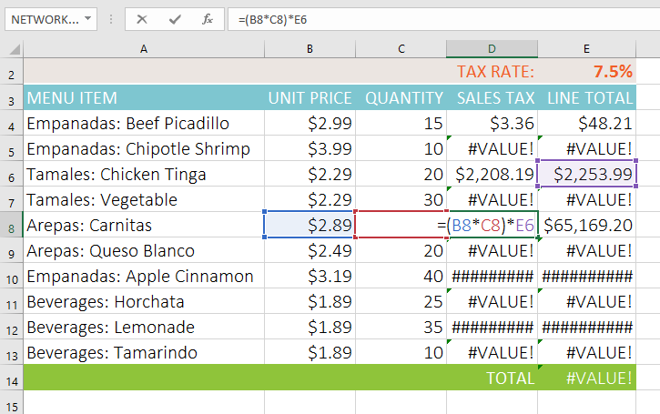
Sử dụng tham chiếu ô với nhiều trang tính
Excel cho phép bạn tham chiếu đến bất kỳ ô nào trên bất kỳtrang tínhnào, điều này có thể đặc biệt hữu ích nếu bạn muốn tham chiếu một giá trị cụ thể từ trang tính này sang trang tính khác. Để thực hiện việc này, bạn chỉ cần bắt đầu tham chiếu ô bằngbảng tínhtên, theo sau làdấu chấm thanđiểm(!). Ví dụ: nếu bạn muốn tham chiếu ôA1trênSheet1, thì tham chiếu ô của nó sẽ làSheet1!A1.
Lưu ý rằng nếu tên trang tính chứadấu cách, bạn sẽ cần bao gồmdấu ngoặc đơn (' ')xung quanh tên. Ví dụ: nếu bạn muốn tham chiếu ôA1trên trang tính có tênNgân sách tháng 7, thì tham chiếu ô của ô đó sẽ là'Ngân sách tháng 7'!A1.
Để tham chiếu các ô trên bảng tính:
Trong ví dụ bên dưới, chúng tôi sẽ đề cập đến một ô có giá trị được tính toán giữa hai trang tính. Điều này sẽ cho phép chúng ta sử dụnggiá trị chính xáctrên hai trang tính khác nhau mà không cần viết lại công thức hoặc sao chép dữ liệu.
- Xác định vị trí ô bạn muốn tham chiếu và ghi lại bảng tính của ô đó. Trong ví dụ của chúng tôi, chúng tôi muốn tham chiếu ôE14trên bảng tínhThứ tự menu.
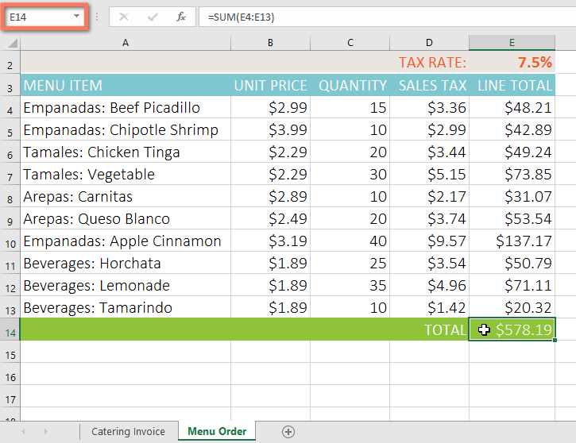
2. Điều hướng tớibảng tínhmong muốn. Trong ví dụ của chúng tôi, chúng tôi sẽ chọn bảng tínhHóa đơn ăn uống.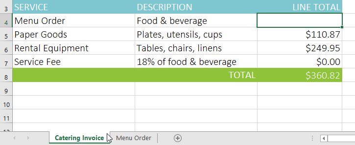
3. Xác định vị trí và chọnônơi bạn muốn giá trị xuất hiện. Trong ví dụ của chúng tôi, chúng tôi sẽ chọn ôC4.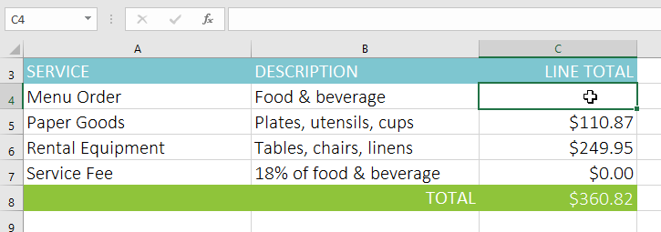
4. Nhậpdấu bằng (=),trang tínhtêntheo sau làdấu chấm than(!)vàđịa chỉ ô. Trong ví dụ của chúng tôi, chúng tôi sẽ nhập='Menu Order'!E14.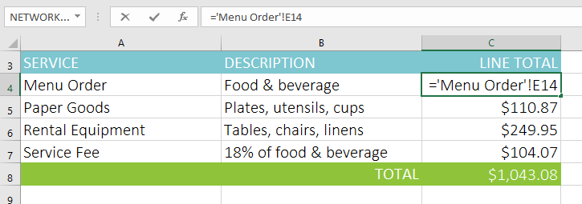
5. NhấnEntertrên bàn phím của bạn.giá trịcủa ô được tham chiếu sẽ xuất hiện. Bây giờ, nếu giá trị của ô E14 thay đổi trên bảng tính Thứ tự Thực đơn, nó sẽ được cập nhật tự động trên bảng tính Hóa đơn Dịch vụ ăn uống.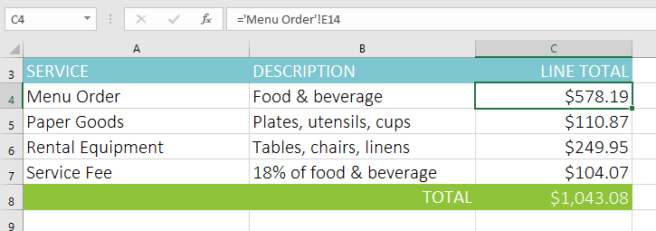
Nếu sau này bạnđổi tênbảng tính của mình, tham chiếu ô sẽ được cập nhật tự động để phản ánh tên bảng tính mới.
Nếu bạn nhập tên bảng tính không chính xác, lỗi#REF!sẽ xuất hiện trong ô. Trong ví dụ bên dưới, chúng tôi đã gõ sai tên của trang tính. Để chỉnh sửa, bỏ qua hoặc điều tra lỗi, hãy nhấp vào nútLỗibên cạnh ô và chọn một tùy chọn từmenu.
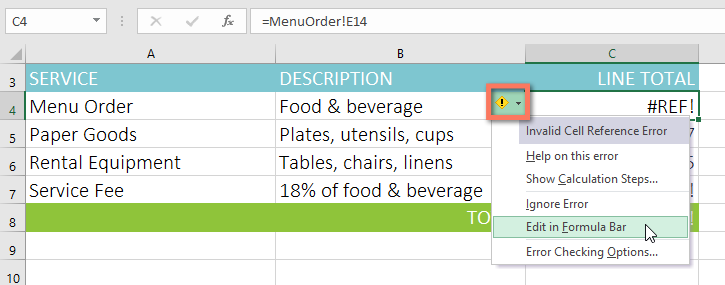
Thử thách!
- Mở sổ làm việc thực hành của chúng tôi.
- Nhấp vào tabHàng giấyở phía dưới bên trái của sổ làm việc.
- Trong ôD4, nhập công thức nhân đơn giá trongB4, số lượng trongC4và thuế suất trongE2. Đảm bảo sử dụngtham chiếu ô tuyệt đốicho thuế suất vì thuế suất sẽ giống nhau ở mọi ô.
- Sử dụngđiền vàođể sao chép công thức bạn vừa tạo vào các ôD5:D12.
- Thay đổi thuế suất trong ôE2thành 6,5%. Lưu ý rằng tất cả các ô của bạn đã được cập nhật. Khi bạn hoàn tất, sổ làm việc của bạn sẽ trông như thế này:
 6. Nhấp vào tabHóa đơn ăn uống.
7. Xóa giá trị trong ôC5và thay thế bằngtham chiếucho tổng chi phí của hàng hóa giấy.Gợi ý: Giá của hàng giấy nằm ở ôE13trên bảng tínhHàng giấy.
8. Sử dụng các bước tương tự ở trên để tính thuế bán hàng cho từng mặt hàng trên bảng tínhThứ tự thực đơn. Tổng chi phí trong ôE14sẽ cập nhật. Sau đó, trong ôC4của bảng tínhHóa đơn ăn uống, hãy tạo mộttham chiếu ôcho tổng số bạn vừa tính.Lưu ý: Nếu bạn sử dụng sổ làm việc thực hành của chúng tôi để theo dõi trong bài học thì có thể bạn đã hoàn thành bước này.
9. Khi bạn hoàn tất, bảng tínhHóa đơn ăn uốngsẽ trông giống như thế này:
6. Nhấp vào tabHóa đơn ăn uống.
7. Xóa giá trị trong ôC5và thay thế bằngtham chiếucho tổng chi phí của hàng hóa giấy.Gợi ý: Giá của hàng giấy nằm ở ôE13trên bảng tínhHàng giấy.
8. Sử dụng các bước tương tự ở trên để tính thuế bán hàng cho từng mặt hàng trên bảng tínhThứ tự thực đơn. Tổng chi phí trong ôE14sẽ cập nhật. Sau đó, trong ôC4của bảng tínhHóa đơn ăn uống, hãy tạo mộttham chiếu ôcho tổng số bạn vừa tính.Lưu ý: Nếu bạn sử dụng sổ làm việc thực hành của chúng tôi để theo dõi trong bài học thì có thể bạn đã hoàn thành bước này.
9. Khi bạn hoàn tất, bảng tínhHóa đơn ăn uốngsẽ trông giống như thế này:
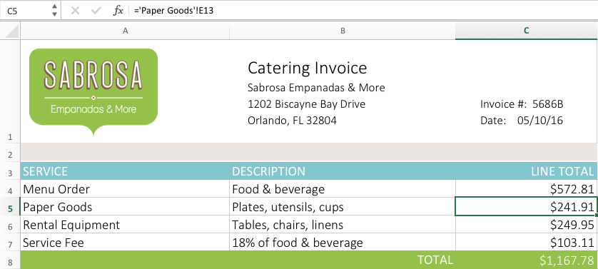
/en/excel/functions/content/